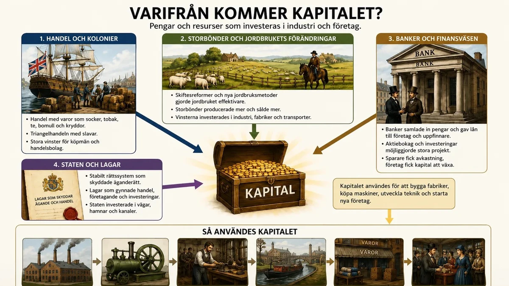
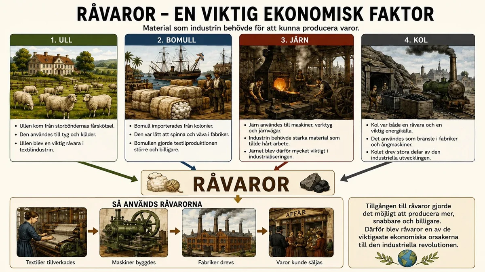
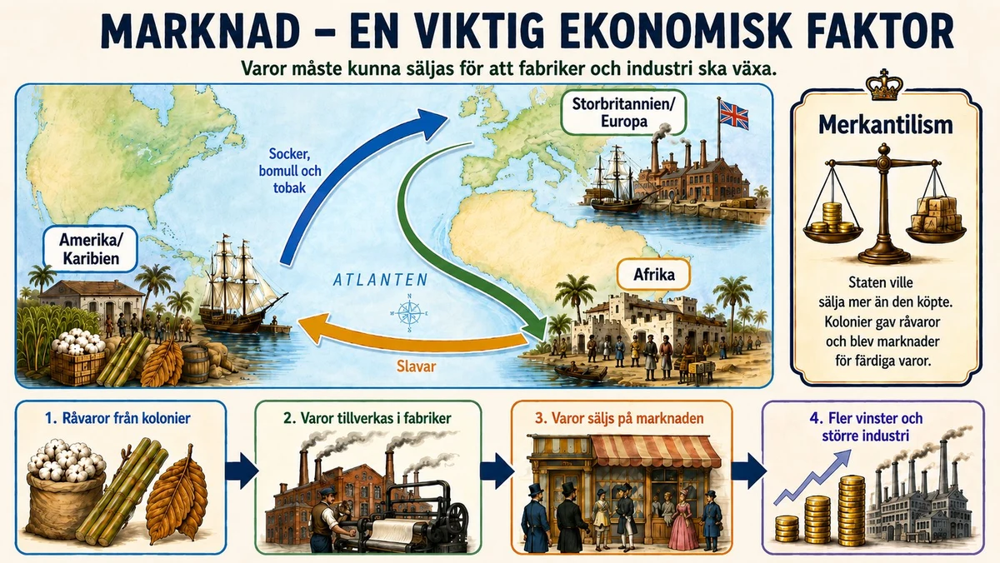

— kapital, råvaror, marknad och idéerna som gjorde industrin möjlig —
Den industriella revolutionen kunde inte ske bara för att människor uppfann nya maskiner. För att fabriker skulle kunna byggas behövdes också pengar, material och kunder. Tre viktiga ekonomiska faktorer var kapital, råvaror och marknad. Storbritannien hade alla tre — därför startade industrialiseringen där.
Den industriella revolutionen kunde inte ske bara för att någon uppfann nya maskiner. För att fabriker skulle kunna byggas behövdes också viktiga ekonomiska förutsättningar. Tre av de viktigaste ekonomiska faktorerna var kapital, råvaror och marknad. De hängde ihop med varandra och gjorde det möjligt för industrin att växa.
Kapital betyder pengar och resurser som kan användas för att investera. I Storbritannien hade människor tjänat pengar på handel, jordbruk och kolonier. Brittiska köpmän handlade med socker, te, tobak och bomull. Storbritannien deltog också i triangelhandeln, där slavhandel var en del av systemet. Dessa pengar kunde investeras i fabriker. Banker lånade ut pengar till företagare.

Kapital betyder pengar och resurser som kan användas för att investera i något. För att starta en fabrik behövdes kapital. Fabriksägaren behövde pengar till byggnader, maskiner, råvaror, transporter och löner till arbetare.
I Storbritannien fanns det många grupper som hade fått mycket pengar under 1600- och 1700-talet. En del kapital kom från handel med andra delar av världen. Brittiska köpmän och handelsbolag tjänade pengar på handel med varor som socker, tobak, bomull och te. Storbritannien deltog också i triangelhandeln, där slavhandel var en del av systemet. Det skapade stora vinster för många handelsmän.
Kapital kom också från jordbruket. När jordbruket förändrades genom skiftesreformer och nya metoder kunde storbönder och jordägare producera mer och sälja mer. Banker och finansväsende blev också viktiga. Banker kunde samla in pengar från människor som sparade och sedan låna ut pengar till företagare. På så sätt kunde fler starta företag och investera i industri.
Att bygga en fabrik kostade mer än de flesta människor någonsin sett. En verkstad kunde en hantverkare bekosta själv, men en textilfabrik med maskiner, byggnad, råvarulager och löner till hundratals arbetare krävde enorma summor innan den första varan ens var såld. Därför är frågan om varifrån kapitalet kom en av de mest avslöjande i hela industrialiseringens historia — den leder oss rakt in i både Storbritanniens styrkor och dess mörkaste sidor.
En stor del av kapitalet kom från handel, och en betydande del av den handeln var djupt orättfärdig. Storbritannien var en av huvudaktörerna i den atlantiska triangelhandeln: europeiska varor såldes till Afrika, förslavade människor fraktades under fruktansvärda förhållanden till Amerika, och råvaror som socker, tobak och bomull skeppades tillbaka till Europa. Vinsterna var svindlande, och en del av dem investerades i hamnar, banker och tidiga fabriker i städer som Liverpool, Bristol och Manchester. Det är en obekväm men viktig insikt: en del av det välstånd som byggde de brittiska fabrikerna vilade på slaveriets lidande. Här knyts en tråd tillbaka till det du läst om slaveriet i den amerikanska och franska revolutionen — samma system, sett från den ekonomiska sidan.
Men handel med kolonier var inte den enda källan. Jordbruket, som du nyss läst om, spelade också en roll: när skiftesreformer och nya metoder gjorde storbönder rika kunde deras vinster flyttas över i industri. Och framför allt växte det fram en helt ny finansiell maskin. Banker — med Bank of England, grundad 1694, som nav — kunde samla in sparande från många människor och låna ut det till företagare. Aktiebolag lät flera investerare dela på både risken och vinsten i ett stort projekt. Genom kredit och lån kunde en driftig person bygga en fabrik med andras pengar. Denna "finansrevolution" var lika viktig som ångmaskinen: den förvandlade utspridda besparingar till samlad investeringskraft.
Bakom allt detta låg också en förutsättning som är lätt att förbise: förtroende. Kapital vågar sig bara dit det känner sig tryggt. Storbritannien hade efter 1600-talets politiska strider fått ett någorlunda stabilt styre, ett rättsväsende som skyddade ägande och avtal, och en stat som byggde vägar och hamnar. Den som investerade kunde lita på att lagen skyddade det han ägde. I länder med godtyckligt envälde, där en kung kunde beslagta förmögenheter efter behag, vågade kapitalet sig inte fram lika lätt. Ordning och äganderätt var alltså i sig en ekonomisk faktor.
Ett märkligt och ofta förbisett drag är dessutom vilka människor som drev fram mycket av den tidiga industrin. En påfallande stor andel var religiösa oliktänkare — kväkare, baptister och andra som stod utanför den engelska statskyrkan. Eftersom de av religiösa skäl var utestängda från universitet, ämbeten och politik, kanaliserade de i stället sin energi, disciplin och sina nätverk in i handel, bankväsen och industri. Kväkarfamiljer grundade några av landets viktigaste banker, som Lloyds och Barclays, och järnmästardynastin Darby var kväkare. Att stängas ute från maktens finrum gjorde dem till desto ivrigare byggare av den nya ekonomin — ett tänkvärt exempel på hur utanförskap ibland kan förvandlas till drivkraft.
Det verkligt avgörande med kapitalet var dock inte bara att det fanns, utan hur det användes. I äldre tider hade rikedom ofta samlats för att lysa — i slott, guld och praktfulla fester. Nu började pengar i stället sättas i ständig rörelse: investeras i produktion, ge vinst, och genast investeras på nytt i ännu mer produktion. Kapital blev inte en skatt att gömma utan en motor att driva. Just den rörelsen — investering, produktion, vinst, återinvestering, om och om igen — är själva hjärtat i det ekonomiska system som skulle komma att kallas kapitalism, och som du möter närmare i underdelen om idéerna.
Råvaror är material som används för att tillverka varor. Bomull passade bra i de nya textilmaskinerna och järn användes till maskiner och järnvägar. Kol användes som bränsle till ångmaskinerna. Eftersom Storbritannien hade gott om både kol och järn i sin egen mark var det lättare att bygga upp en stark industri där.

Råvaror är material som används för att tillverka varor. Industrin behövde stora mängder råvaror för att kunna producera mycket.
En viktig råvara var ull. Ullen kom från får och användes för att tillverka tyg och kläder. Senare blev bomull ännu viktigare. Bomullen importerades från kolonier och andra områden som Storbritannien handlade med. Bomull passade bra i de nya textilmaskinerna eftersom den var lätt att spinna och väva.
Järn var också en mycket viktig råvara. Järn användes till maskiner, verktyg, broar, järnvägar och andra delar av industrin. Kol var både en råvara och en energikälla. Kolet användes som bränsle i fabriker och ångmaskiner. Eftersom Storbritannien hade stora tillgångar på kol kunde fabrikerna drivas mer effektivt.
En fabrik är i grunden en plats där råvaror förvandlas till varor — och utan råvaror står den stilla, hur avancerade maskinerna än är. Därför var tillgången på rätt material en av de faktorer som avgjorde var industrialiseringen kunde börja. Och när man ser närmare på vilka råvaror det handlade om, framträder både en energihistoria och en imperiehistoria.
Två material stod i centrum: kol och järn. Man brukar rentav kalla den tidiga industrialiseringen för "kolets och järnets tidsålder". Järnet var det som maskinerna, verktygen, broarna och snart järnvägarna byggdes av. Kolet var dubbelt viktigt — dels en råvara, dels den energikälla som drev ångmaskinerna och smälte järnet. Och här hade Storbritannien en närmast oförtjänt tur: landet låg bokstavligen ovanpå stora fyndigheter av både kol och järn, ofta nära varandra. Att inte behöva frakta dessa tunga material långa sträckor var en enorm fördel. Det är svårt att överskatta hur mycket geologin under fötterna betydde för att just Storbritannien blev först.
Detta pekar mot en djupare förändring som lätt glöms bort. Före industrialiseringen var samhället byggt på organiska råvaror: trä till bränsle och byggnad, ull och lin till kläder, muskelkraft från människor och djur. Med kolet skedde en övergång till en mineralisk ekonomi — en energikälla grävd ur marken, i praktiken lagrad solenergi från urtiden, som kunde ge långt mer kraft än någon skog eller häst. Denna energiövergång är en av de mest grundläggande i mänsklighetens historia, och dess följder — inklusive de klimatproblem vi lever med idag — började just här.
Övergången till kol var dessutom delvis framtvingad av en kris. I århundraden hade man smält järn med hjälp av träkol, men den växande järnframställningen höll på att hugga ner Storbritanniens skogar i en oroande takt. Bristen på ved blev ett allt större problem. Lösningen kom i början av 1700-talet när järnmästaren Abraham Darby vid Coalbrookdale lyckades använda koks — en sorts renad stenkol — i stället för träkol för att smälta järn. Därmed knöts kolet och järnet samman till en enda kraftfull industri, oberoende av skogarna. Det är ett fint exempel på hur en brist kan driva fram en uppfinning som i sin tur öppnar en helt ny väg: hade veden räckt, hade steget till kolet kanske dröjt.
Den andra stora råvaran, bomullen, berättar en annan och mer global historia. Textilindustrin var industrialiseringens spjutspets, och den slukade bomull. Men bomull kan inte odlas i det kalla, fuktiga Storbritannien. Alltså måste den importeras — och den kom från imperiets och slaveriets värld: från plantager i Amerikas södra delar och i Västindien, och från Indien. På de amerikanska plantagerna odlades bomullen till stor del av förslavade människor. Här återkommer alltså samma mönster som med kapitalet: en "brittisk" industri som i själva verket vilade på ett globalt nät av kolonier och tvångsarbete. Fabriken i Manchester och plantagen på andra sidan Atlanten var två delar av samma system.
Råvarorna band också ihop temana i din historiebok. Ullen kom från den förbättrade fårskötsel du läste om i jordbrukstemat. Kolet skulle bli oskiljaktigt från ångmaskinen, som du möter i temat om tekniken. Och bomullen förband industristaden med kolonierna. Ingen råvara stod för sig själv; var och en var en länk i en lång kedja.
Slutligen är det värt att fundera på maktdimensionen. Den som kontrollerade råvarorna hade ett grepp om hela produktionen. Storbritanniens flotta och kolonier gav landet just ett sådant grepp — säker tillgång till bomull, socker och andra varor som konkurrenterna fick kämpa för. Råvaror var därför aldrig bara en ekonomisk fråga, utan också en fråga om imperium, sjömakt och global ojämlikhet — teman som skulle prägla hela 1800-talet.
En marknad betyder att det finns människor som vill köpa varor. När befolkningen ökade köptes mer, och kolonierna både gav råvaror och köpte färdiga varor. Många stater följde merkantilismen — idén att ett land skulle sälja mer än det köpte, så att guld och silver strömmade in. Därför ville stater skaffa kolonier.

Marknad betyder att det finns människor och platser där varor kan säljas. Under 1700-talet ökade befolkningen i Storbritannien och Europa. När fler människor levde behövdes också fler kläder, verktyg och andra vardagsvaror.
Storbritanniens kolonier blev också viktiga marknader. Kolonierna kunde leverera råvaror och samtidigt köpa brittiska varor. Här hänger marknaden ihop med merkantilismen. Merkantilism var en ekonomisk idé som gick ut på att ett land skulle sälja mer än det köpte. Då skulle landet bli rikare och mäktigare. Kolonier gav billiga råvaror och köpte brittiska varor.
Marknaden gjorde att fabriksägare kunde tjäna pengar på massproduktion. När många ville köpa varor blev det viktigt att producera snabbare och billigare. Det bidrog till att fabriker och maskiner blev allt viktigare.
Det är lätt att tänka att industrialiseringen handlade om att kunna tillverka mer. Men en fabrik som tillverkar tusen tröjor har inte löst någonting om ingen köper dem — den har bara ett lager fullt av osäljbara tröjor och en ägare på väg mot ruin. Produktion utan efterfrågan är meningslös. Därför var marknaden — människorna som ville och kunde köpa — precis lika avgörande som kapitalet och råvarorna, fastän den ofta glöms bort.
Var fanns då köparna? Först och främst hemma. Under 1700-talet växte Storbritanniens och Europas befolkning snabbt, delvis tack vare den jordbruksrevolution du redan mött. Fler människor betyder fler munnar att mätta och fler kroppar att klä — en växande hemmamarknad nästan av sig själv. Men något mer subtilt hände också: människors sätt att konsumera förändrades. När massproduktionen gjorde varor billigare kunde saker som förr varit lyx bli var mans egendom. Bomullstyg är det klassiska exemplet — när priset föll kunde vanligt folk plötsligt ha flera plagg, byta oftare och till och med följa modet. Historiker talar om en konsumtionsrevolution: en ny värld där allt fler människor köpte allt fler ting. Och varje ny köpare gav fabrikören skäl att producera ännu mer.
Den andra stora marknaden låg utanför landets gränser, i kolonierna — och här möter vi tidens härskande ekonomiska idé, merkantilismen. Enligt den skulle ett land sträva efter att sälja mer än det köpte, så att guld och silver strömmade in och nationen blev rik och mäktig. Kolonierna passade perfekt in i detta tänkande: de tvingades leverera billiga råvaror och köpa moderlandets färdiga varor, gärna skyddade från utländsk konkurrens. En koloni var i merkantilismens ögon både en råvarukälla och en garanterad kund. Storbritanniens stora kolonialvälde gav därför dess industri en enorm, delvis inlåst marknad — ett försprång få andra länder kunde matcha. (Just hur synen på ekonomi förändrades från merkantilism till något nytt är ämnet för nästa underdel.)
Det verkligt kraftfulla var hur marknaden ingick i en självförstärkande cirkel tillsammans med de andra faktorerna. En större marknad gjorde det lönsamt att investera i maskiner. Maskinerna sänkte priserna. Lägre priser lockade ännu fler köpare, vilket gjorde marknaden större, vilket motiverade ännu mer produktion. Varje varv i cirkeln drev det nästa. Det var denna spiral, inte någon enskild uppfinning, som fick industrin att växa så explosionsartat.
En marknad måste dessutom gå att nå — och här spelade en tyst revolution i transporterna en avgörande roll. Det hjälpte föga att en fabrik kunde tillverka billiga varor om de inte gick att frakta dit köparna fanns. Under 1700-talet byggde Storbritannien ut ett nät av kanaler som band samman kolgruvor, fabriker och städer, och förbättrade landsvägarna så att varor och människor kunde färdas snabbare. Landets ögeografi med många segelbara floder och korta avstånd till kusten var en fördel: nästan ingenting låg långt från vatten. Tunga varor som kol och järn kunde nu fraktas billigt över hela landet, och en samlad nationell marknad började ta form där det tidigare mest funnits lokala. När järnvägen senare kom skulle den fullborda vad kanalerna påbörjat. Marknaden var alltså inte bara en fråga om hur många som ville köpa, utan om hur väl varorna och köparna kunde nå varandra.
Marknadens logik förde också med sig en ny sorts press som skulle prägla hela industrisamhället. När många tillverkare tävlade om samma köpare tvingades var och en att producera snabbare och billigare än de andra — annars förlorade man kunderna. Denna konkurrens blev en obönhörlig drivkraft: den belönade den som effektiviserade och straffade den som stod stilla. Samma press som gjorde varorna billiga och tillgängliga för konsumenten kunde samtidigt driva fabriksägaren att pressa löner och arbetstider — en spänning du kommer att möta på nära håll i temat om arbetskraften. Marknaden var alltså inte bara en plats att sälja på, utan en kraft som formade hur hela samhället arbetade och levde.
Synen på ekonomi har inte alltid varit som idag. Före den industriella revolutionen ändrades den steg för steg — från moralisk ekonomi, till handelskapitalism, och sedan till kapitalism.
I det gamla bondesamhället rådde en moralisk ekonomi. Ekonomin styrdes av tradition, regler och rättvisa — inte bara av vinst. Priser skulle vara rättvisa och alla skulle ha mat. I städerna bestämde skråna vem som fick arbeta och vad varor fick kosta. Man skulle inte tjäna hur mycket pengar som helst.
Från 1500-talet växte handelskapitalismen fram. Européer handlade med hela världen och skaffade kolonier. Köpmän blev rika genom att köpa varor billigt på en plats och sälja dem dyrare på en annan. De samlade på sig kapital — pengar och resurser. Många stater följde merkantilismen: idén att ett land skulle sälja mer än det köpte, så att guld och silver strömmade in.
Sedan kom kapitalismen. Nu användes pengar inte bara till handel, utan till att bygga upp produktion. Privatpersoner och företag investerade kapital i fabriker, maskiner och arbetare för att tillverka varor och göra vinst. Allt fler blev lönearbetare — de ägde inte fabriken utan sålde sin arbetskraft till en fabriksägare.
Fabriker uppstod alltså inte bara för att det fanns nya maskiner, utan också för att synen på ekonomi hade förändrats: det hade blivit vanligt att använda kapital för att skapa mer kapital.
Moralisk ekonomi → Handelskapitalism → Kapitalism
Under lång tid tänkte människor inte på ekonomi på samma sätt som vi ofta gör idag. Idag är vi vana vid att företag försöker göra vinst, att människor investerar pengar och att ekonomin förändras genom konkurrens, handel och produktion. Men så har det inte alltid varit. Före den industriella revolutionen förändrades synen på ekonomi steg för steg. För att förstå varför fabriker, investeringar och kapitalism växte fram behöver man därför se den långa utvecklingen från moralisk ekonomi, till handelskapitalism, och vidare till kapitalism.
I det äldre jordbrukssamhället byggde ekonomin mycket på traditioner, lokala regler och moral. De flesta människor levde på landsbygden och arbetade med jordbruk. Ekonomin handlade framför allt om att producera det man behövde för att överleva: mat, kläder, redskap och bostäder.
Man kan kalla detta för en moralisk ekonomi. Det betyder att ekonomin inte bara styrdes av vinst och pengar, utan också av tankar om vad som var rätt och rimligt. Priser skulle helst vara rättvisa. Mat skulle finnas till befolkningen. Den som hade makt, till exempel en kung, godsägare eller stadens ledare, förväntades ta ansvar för ordningen i samhället.
I städerna fanns också skråväsendet. Ett skrå var en organisation för hantverkare, till exempel bagare, skomakare eller smeder. Skråna bestämde vem som fick arbeta inom ett yrke, hur varorna skulle tillverkas och ibland även vilka priser som skulle gälla. Tanken var att skydda kvaliteten och skapa ordning, men det gjorde också att konkurrensen blev mindre och att nya idéer kunde bromsas.
I den moraliska ekonomin var det alltså inte självklart att någon skulle få tjäna hur mycket pengar som helst. Ekonomin skulle hållas inom vissa gränser. Den skulle passa in i samhällets gamla ordning.
Från medeltiden och särskilt från 1500-talet förändrades ekonomin allt mer. Europas handel med andra delar av världen ökade. Portugal, Spanien, Nederländerna, Frankrike och Storbritannien byggde upp handelsvägar, kolonier och stora handelskompanier. Varor som socker, tobak, bomull, kryddor, te och silver transporterades över haven.
Detta ledde fram till handelskapitalism. Med handelskapitalism menas att rikedom framför allt skapades genom handel. Köpmän köpte varor billigt på en plats och sålde dem dyrare på en annan plats. Vinsten kom alltså främst från skillnaden mellan inköpspris och försäljningspris.
En viktig del av handelskapitalismen var att köpmän började samla på sig stora mängder pengar, alltså kapital. Kapital betyder resurser som kan användas för att skapa mer rikedom. Det kan vara pengar, fartyg, lager, handelskontakter eller varor.
Under denna tid blev också merkantilismen en viktig ekonomisk idé. Merkantilism var ett sätt för stater att tänka kring ekonomi. Målet var att landet skulle bli rikt och mäktigt. Man tänkte att staten skulle sälja mer till andra länder än den köpte. Då skulle guld och silver strömma in i landet. Därför ville många stater skydda den egna handeln, stödja exporten och skaffa kolonier som kunde ge råvaror och marknader.
Handelskapitalismen förändrade alltså synen på ekonomi. Det blev mer accepterat att använda pengar för att tjäna mer pengar. Men den stora vinsten kom fortfarande mest från handel, inte från fabriker och industriell produktion.
Nästa stora förändring kom när pengar inte bara användes för handel, utan också för att bygga upp produktion. Det är här vi närmar oss kapitalism i modern mening.
Kapitalism innebär att privatpersoner eller företag äger kapital och använder det för att skapa vinst. Det kan handla om att investera i maskiner, byggnader, råvaror och arbetskraft. Målet är att producera varor som kan säljas på en marknad med vinst.
Detta blev särskilt viktigt under den industriella revolutionen. För att bygga fabriker behövdes mycket kapital. Någon behövde betala för lokaler, maskiner, kol, råvaror och arbetarnas löner innan varorna hade sålts. Det gjorde att rika köpmän, banker, investerare och ibland jordägare kunde spela en viktig roll. De hade pengar som kunde satsas i nya företag.
Skillnaden mot handelskapitalismen var att vinsten nu i allt högre grad skapades genom produktion. Man tjänade inte bara pengar på att köpa och sälja varor, utan på att organisera arbetet på ett nytt sätt. I fabriker kunde många arbetare använda maskiner för att producera fler varor snabbare och billigare än tidigare.
Kapitalismen förändrade också synen på arbete. I det gamla jordbrukssamhället arbetade många på sin egen jord eller inom hushållet. I det nya industrisamhället blev fler människor lönearbetare. De ägde inte fabriken eller maskinerna, utan sålde sin arbetskraft till en fabriksägare.
Utvecklingen från moralisk ekonomi till handelskapitalism och kapitalism visar att människors syn på ekonomi förändrades mycket över tid.
Den långa linjen
Den här förändringen är viktig för att förstå den industriella revolutionen. Fabriker uppstod inte bara för att det fanns nya maskiner. De uppstod också för att synen på ekonomi hade förändrats. Det hade blivit mer accepterat och vanligt att använda kapital för att skapa mer kapital. Ekonomin började allt mer handla om investeringar, produktion, marknader och vinst. Det var en avgörande del av vägen in i det moderna industrisamhället.
Den viktigaste ekonomiska faktorn bakom industrialiseringen var kanske inte en sak man kan ta på — inte kol, inte pengar, inte maskiner — utan något så oväntat som en idé. Ekonomiska faktorer brukar räknas i ton och pund, men bakom kapital, råvaror och marknad låg ett förändrat sätt att tänka om ekonomin, och utan den tankeförskjutningen hade de andra faktorerna aldrig satts i rörelse. Standardtexten har visat dig den långa vägen från moralisk ekonomi till kapitalism. Här ska vi stanna vid det avgörande ögonblick då det nya tänkandet fick ord — och en försvarare.
I den gamla moraliska ekonomin var girigheten en synd och vinstjakten något som måste tyglas av rättvisa, tradition och skrånas regler. Att sträva efter största möjliga vinst ansågs nästan opassande. Det som hände under 1700-talet var att denna urgamla misstänksamhet mot egennyttan vändes upp och ner — och personen som mest kraftfullt formulerade omvändningen var den skotske tänkaren Adam Smith. År 1776, samma år som den amerikanska självständighetsförklaringen, gav han ut Nationernas välstånd, en av historiens mest inflytelserika böcker.
Smiths idéer var en direkt attack på merkantilismen. Där merkantilisterna trodde att ett lands rikedom bestod av det guld och silver staten kunde samla på hög, hävdade Smith att ett lands verkliga välstånd är dess förmåga att producera varor och tjänster. Och där merkantilismen ville att staten skulle styra handeln hårt med tullar och regler, menade Smith tvärtom att ekonomin fungerar bäst när människor får handla fritt — en tanke som brukar kallas laissez-faire, "låt gå". Hans mest berömda bild är den osynliga handen: när var och en tillåts sträva efter sin egen vinning leds de, som av en osynlig hand, att också gagna helheten, eftersom de måste producera det andra vill ha till ett pris andra vill betala. Smith illustrerade det med ett vardagligt exempel: det är inte av godhet som slaktaren, bryggaren och bagaren ger oss vår middag, skrev han, utan av omsorg om sin egen vinst — och ändå blir vi alla mätta. Var och en som tänker på sig själv råkar samtidigt tjäna alla andra.
Det djupt omvälvande i detta var inte främst ekonomiskt utan moraliskt. Smith förvandlade egennyttan från en last till en drivkraft för allas bästa. Plötsligt var den fabriksägare som jagade vinst inte en självisk girigbuk, utan en nyttig samhällsbyggare. Det gav industrialiseringens män något ovärderligt: ett gott samvete och ett språk att försvara sig med. Idéerna var alltså inte bara en beskrivning av vad som hände — de rättfärdigade det, och gjorde det tänkbart att bygga ett helt samhälle kring investering, konkurrens och vinst.
Man ska samtidigt se att detta var upplysningen tillämpad på ekonomin. Precis som upplysningsfilosoferna trodde att förnuftet kunde upptäcka naturens och samhällets lagar, sökte Smith ekonomins lagar. Ekonomin blev för första gången en vetenskap med egna principer, inte bara en del av moralen eller politiken.
Men den nya tanken bar också på skuggor som skulle prägla hela 1800-talet. Om marknaden skulle lämnas fri, borde då staten alls lägga sig i hur fabriksägare behandlade sina arbetare? Länge blev svaret nej — och det dröjde innan de första lagarna mot de värsta missförhållandena kom, något du möter i temat om arbetskraften. Och mot den nya kapitalismen skulle det växa fram en lika kraftfull motreaktion: socialismen, som med Karl Marx i spetsen anklagade just det fria marknadstänkandet för att göra de många fattiga medan de få blev rika. Idéerna om ekonomin var alltså aldrig neutrala verktyg. De var stridsfrågor — och den strid som Adam Smith och hans kritiker inledde pågår, i ny form, fortfarande i varje debatt om marknad, stat och rättvisa i vår egen tid.
Laddar övningskort…
Laddar frågor ...